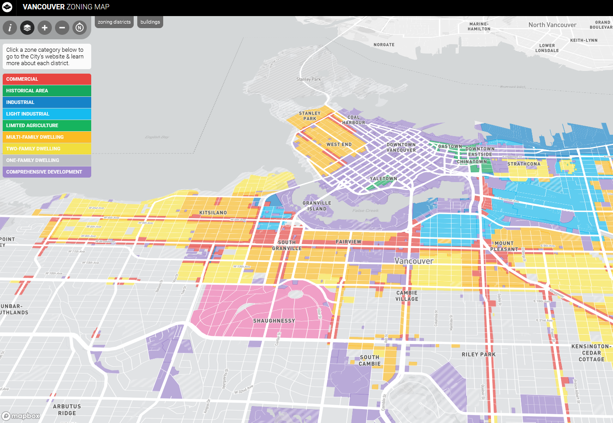
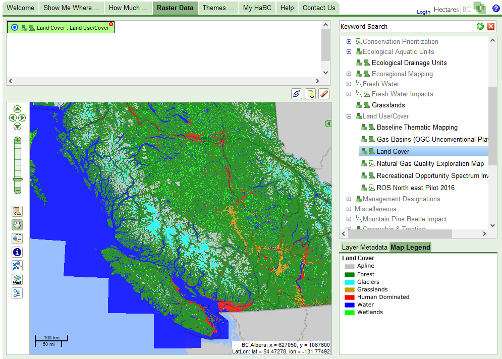
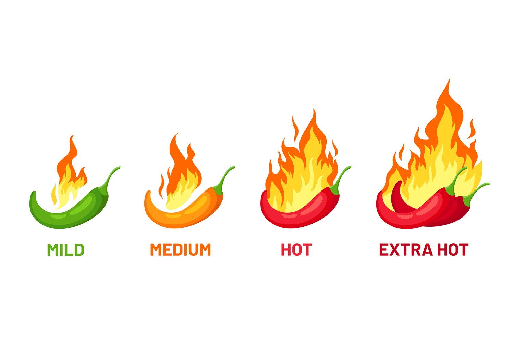
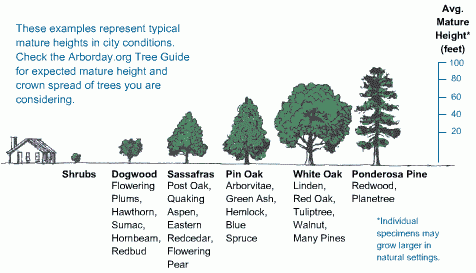

Qualitative Data
These data are categorical; they are strictly descriptive and lack any meaningful numeric value.
-Textual or coded numerals
-Measured on either a Nominal or Ordinal scale.
Nominal Scale
Just names or categories with no ranking or direction are nominal.
Categories are not more/less, better/worse, they are just different.
Nominal Scale
Examples:
Flower Species

Nominal Scale
Examples:
Flower Species
Zoning Categories

Nominal Scale
Examples:
Flower Species
Zoning Categories
Landcover Classification

Operations
With nominal data we can check equivalency and count frequencies, but nothing else.

Ordinal Scale
These data are categories and have a some ranking or directionality. Examples include:
-Spice levels

Ordinal Scale
These data are categories and have a some ranking or directionality. Examples include:
-Spice levels
-Relative heights

Ordinal Scale
These data are categories and have a some ranking or directionality. Examples include:
-Spice levels
-Relative heights
-Compas Direction

Operations
We can the same operations as nominal data, plus a a bit more.
Check order/rank (greater than, less than)
Sometimes we can calculate the median. For odd sets the median is the middle. For even sets its the average of the middle two. Group 2, both values are "Neutral". Group 3, they are "Neutral" and "Agree". We can't average these.

One solution is to arbitrarily assign a numeric score.
Graded Membership
There are often "exceptions" that blur the lines a bit. These are known as fuzzy variables, and we can use a Graded Membership to assign them to categories.

Where to draw the line between forest/alpine?
Graded Membership
A simple approach would be a "winner take all" approach. If a plot is 5% bare rock, 40% forest, and 45% alpine meadow, the area will be classified as alpine meadow.
Where to draw the line between forest/alpine?
Graded Membership
The downside: information about variability within the area is lost. In practice, many of the qualitative data we work with in GIS, especially those describing natural phenomena, are actually graded membership variables.
Quantitative Data
These data are numeric; they describe the quantities associated with a phenomenon. The values are separated by a unit that has inherent meaning (unlike ordinal data).
In addition to the operations we perform on Qualitative data; we can always calculate measures of central tendency (mean/median) and differences (add/subtract)
Kinds of Numbers
Discrete: Integers (whole round numbers), derived from counts, cannot be infinitely subdivided
ex. Population
Continuous: Floats (decimals), derived from measurements, "infinitely" divisible and non-countable
ex. Temperature
Quantitative Data
Discrete and continuous data can be measured on an Interval or Ratio scale. These types of quantitative data are closely related, but have one important distinction.
Ratio Data
These data have fixed, absolute zero points.
-This means they cannot take negative values
-But we can multiply/divide two values (meaningful ratios)
Ratio Data
Population is a good example of discrete ratio data.

Ratio Data
Tree height is a good example of continuous ratio data.
Ratio Data
Other examples of ratio data include:income, rental cost, and units of time (years, seconds, etc.)
-Temperature *in Kelvin (Continuous)
-Precipitation (Continuous)
-Units of time (Continuous)
-Rental cost (Discrete-ish)
-Popular Vote Totals (Discrete)
Interval Data
These data on the other hand, have an arbitrarily set zero point.
-This means they can take negative values
-But we cannot multiply/divide two values (not meaningful ratios)
Interval Data
A key example to highlight the difference: Celsius (interval) vs. Kelvin (ratio).
-°C = °K-273.15.
-Zero °K is "Absolute Zero"
-Zero °C is the freezing point of water

Interval Data
Temperature in Celsius is a continuous interval variable.
Other examples include:
-ph scale (continuous)
-Standardized test scores
-Dates (discrete)
-Times (discrete-ish)
/p>Derived Ratio
Sometimes we want to account for the influence of one variable when analyzing another. To do this, we can divide one value by by another to get the ratio of the two, also known as a **derived ratio**. This process is sometimes referred to as **Normalizing** or **Standardizing** our data. The basic formula is: $C=\frac{A}{B}$, where A is our variable of interest, B is our confounding variable, and C is our new derived ratio.
Derived Ratio
There are many circumstances where we might need to do this. A common example is housing affordability.
-I make 1,805/mo teaching this course
-My rent $1,025/mo
-57% of my income from teaching goes to rent :(
Derived Ratio
Another would be population proportions, ex: % Indigenous Population